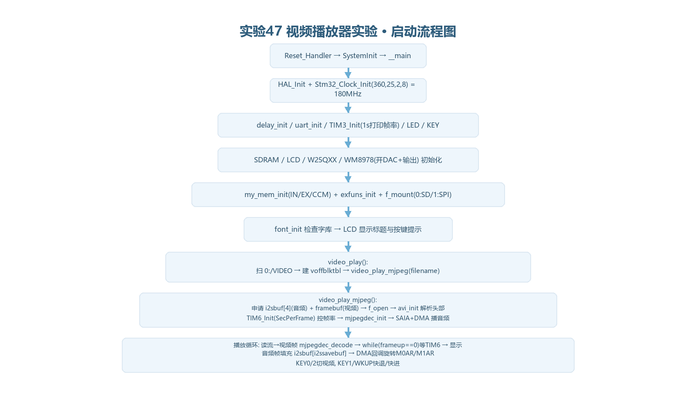
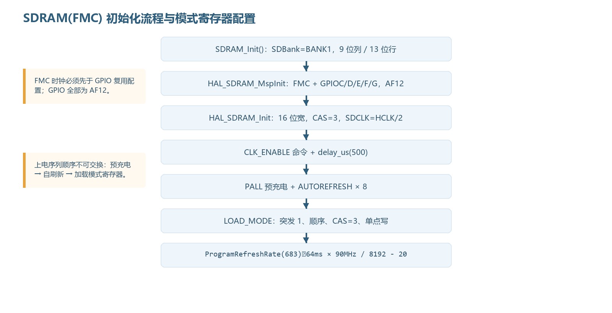
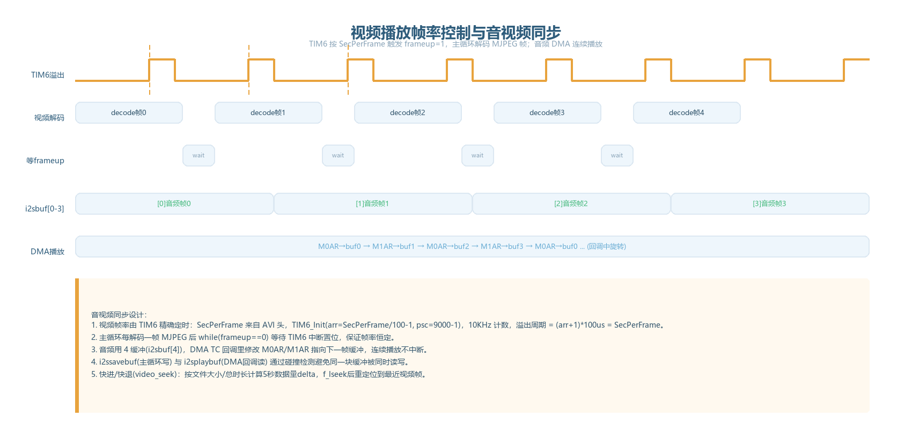
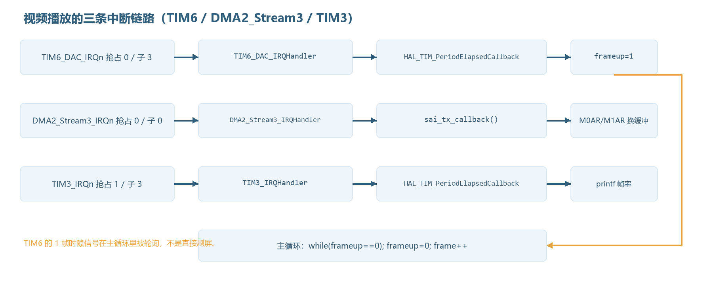

01 工程概述与硬件资源
本实验的目标是做一个“能放视频的开发板”：从 SD 卡根目录的 VIDEO 文件夹读取 AVI 文件，按 AVI 索引把文件拆成视频流和音频流。视频流是逐帧 JPEG，交给 MJPEG 解码器还原成 RGB565 写入 SDRAM 帧缓存；音频流是 PCM，经 SAI + DMA 送到 WM8978。画面刷新由 TIM6 的“帧时隙”控制，按键负责上一曲、下一曲、快进和快退。
| 模块 | 关键引脚 / 资源 | 在本实验中的作用 |
|---|---|---|
| SDRAM（W9825G6KH） | FMC Bank1，16 位数据宽度 | LCD 显存、MJPEG 解码缓冲、内存池 |
| LCD（RGB565） | LTDC + SDRAM 显存 | 显示视频帧、文件名、时间与帧率 |
| SD 卡 | SDIO + FatFs（盘符 0:） | 读取 AVI 文件与目录索引 |
| SPI FLASH（W25Q256） | SPI（盘符 1:） | 存放字库，供中文显示使用 |
| WM8978 + SAI | SAI1 Block A + DMA2_Stream3 | 音频 DAC 输出，4 个 5KB 缓冲轮转 |
| 按键 | KEY0 / KEY1 / KEY2 / WK_UP | 下一曲 / 快退 / 上一曲 / 快进 |
| USART1 | PA9 / PA10，115200-8-N-1 | printf 输出帧率、解码错误等日志 |
- 存储：AVI 解析只认文件里的索引和流标志，不依赖文件名后缀。
- 显示：JPEG 解码结果直接写 LCD 窗口，靠 TIM6 的
frameup控制帧率。 - 声音：SAI DMA 双缓冲换链，靠
i2splaybuf与i2ssavebuf避免读写碰撞。
02 启动流程总览
main 的前半段全部是“让板子具备放视频的条件”：时钟、延时、串口、定时器、SDRAM、LCD、SPI FLASH、音频编解码器、内存池、FatFs，最后检查字库并进入 video_play()。
int main(void)
{
HAL_Init(); // 1ms 时基，优先级分组 2
Stm32_Clock_Init(360,25,2,8); // HSE 25MHz → SYSCLK 180MHz
delay_init(180); // fac_us=180，SysTick 走 HCLK
uart_init(115200); // printf 重定向到 USART1
TIM3_Init(10000-1,9000-1); // 10kHz 计数，1s 中断打印帧数
LED_Init(); // 状态指示
KEY_Init(); // KEY0/KEY1/KEY2/WK_UP
SDRAM_Init(); // 显存与解码内存的前提
LCD_Init(); // LTDC + 面板参数
W25QXX_Init(); // 字库存储介质
WM8978_Init(); // 音频 Codec
WM8978_ADDA_Cfg(1,0); // 只开 DAC
WM8978_Input_Cfg(0,0,0); // 关闭输入通道
WM8978_Output_Cfg(1,0); // 开启 DAC 输出
WM8978_HPvol_Set(40,40); // 耳机音量
WM8978_SPKvol_Set(50); // 喇叭音量
my_mem_init(SRAMIN); // 内部 SRAM 内存池
my_mem_init(SRAMEX); // 外部 SDRAM 内存池
my_mem_init(SRAMCCM); // CCM 内存池
exfuns_init(); // FatFs 相关变量申请内存
f_mount(fs[0],"0:",1); // 挂载 SD 卡
f_mount(fs[1],"1:",1); // 挂载 SPI FLASH
while(font_init()) // 字库缺失则一直提示
{
LCD_ShowString(30,50,200,16,16,"Font Error!");
delay_ms(200);
LCD_Fill(30,50,240,66,WHITE);
delay_ms(200);
}
while(1)
{
video_play(); // 进入视频目录并循环播放
}
}
LCD_Init()需要 SDRAM 做显存，SDRAM 不通就会白屏或花屏。my_mem_init(SRAMEX)把 SDRAM 划成动态内存池，后面 AVI 缓冲都从这里mymalloc。f_mount只负责挂载，真正的目录读取在video_play()里。
HARDWARE/LED/led.c 与 HARDWARE/KEY/key.c。03 状态交互演示

- 下一曲：
curindex++，越界后回到 0。 - 上一曲：
curindex--，到 0 后再回到最后一个文件。 - 快进/快退：
video_seek()以“总大小/总秒数×5”为步长移动fpos。
04 启动文件与复位入口
startup_stm32f429xx.s 定义了向量表、栈、堆和复位入口。向量表第 0 项是 __initial_sp，第 1 项是 Reset_Handler；内核复位后自动从这两项装载 MSP 和 PC。
Stack_Size EQU 0x800; // 栈 2KB，中断嵌套与局部变量都靠它 AREA STACK, NOINIT, READWRITE, ALIGN=3 Stack_Mem SPACE Stack_Size __initial_sp Heap_Size EQU 0x200; // 堆 512B，本工程主要用自己写的内存池 AREA HEAP, NOINIT, READWRITE, ALIGN=3 __heap_base Heap_Mem SPACE Heap_Size __heap_limit PRESERVE8 THUMB __Vectors DCD __initial_sp // 第 0 项：栈顶地址 DCD Reset_Handler // 第 1 项：复位入口 Reset_Handler PROC EXPORT Reset_Handler [WEAK] IMPORT SystemInit IMPORT __main LDR R0, =SystemInit BLX R0 // 先做 FPU 与时钟寄存器复位 LDR R0, =__main BX R0 // 跑到 C 库入口，再调用 main ENDP
- 第一跳
BLX SystemInit：把 RCC 复位到默认 HSI 16MHz，并按 FPU 宏决定是否打开 CP10/CP11。 - 第二跳
BX __main：C 库完成 .data 复制、.bss 清零和堆栈初始化，然后调用main。 [WEAK]允许用户在其它文件重写同名入口，但本工程没有重写。
SystemInit 当成“配好 180MHz”。它只把时钟恢复到复位默认值，真正的 180MHz 在 Stm32_Clock_Init() 里完成。05 系统时钟与 HAL 初始化
HAL_Init：时基与优先级分组
HAL_StatusTypeDef HAL_Init(void)
{
__HAL_FLASH_INSTRUCTION_CACHE_ENABLE(); // 打开指令缓存
__HAL_FLASH_DATA_CACHE_ENABLE(); // 打开数据缓存
__HAL_FLASH_PREFETCH_BUFFER_ENABLE(); // 打开预取
HAL_NVIC_SetPriorityGrouping(NVIC_PRIORITYGROUP_2); // 2 位抢占 + 2 位子优先级
HAL_InitTick(TICK_INT_PRIORITY); // TICK_INT_PRIORITY = 0x0F
HAL_MspInit(); // 板级底层初始化
return HAL_OK;
}
Stm32_Clock_Init：PLL 算式
void Stm32_Clock_Init(u32 plln,u32 pllm,u32 pllp,u32 pllq)
{
__HAL_RCC_PWR_CLK_ENABLE(); // 先开 PWR 时钟
__HAL_PWR_VOLTAGESCALING_CONFIG(PWR_REGULATOR_VOLTAGE_SCALE1); // 电压等级 1
RCC_OscInitStructure.OscillatorType=RCC_OSCILLATORTYPE_HSE; // 时钟源 HSE
RCC_OscInitStructure.HSEState=RCC_HSE_ON; // 25MHz 晶振
RCC_OscInitStructure.PLL.PLLState=RCC_PLL_ON; // 打开主 PLL
RCC_OscInitStructure.PLL.PLLM=pllm; // 25
RCC_OscInitStructure.PLL.PLLN=plln; // 360 → VCO 360MHz
RCC_OscInitStructure.PLL.PLLP=pllp; // 2 → SYSCLK 180MHz
RCC_OscInitStructure.PLL.PLLQ=pllq; // 8 → 45MHz，给 USB/SDIO
HAL_RCC_OscConfig(&RCC_OscInitStructure);
HAL_PWREx_EnableOverDrive(); // F429 跑 180MHz 必须开 Over-Drive
RCC_ClkInitStructure.SYSCLKSource=RCC_SYSCLKSOURCE_PLLCLK;
RCC_ClkInitStructure.AHBCLKDivider=RCC_SYSCLK_DIV1; // HCLK=180MHz
RCC_ClkInitStructure.APB1CLKDivider=RCC_HCLK_DIV4; // APB1=45MHz
RCC_ClkInitStructure.APB2CLKDivider=RCC_HCLK_DIV2; // APB2=90MHz
HAL_RCC_ClockConfig(&RCC_ClkInitStructure,FLASH_LATENCY_5); // 5WS 等待周期
}
- VCO = 25MHz × (360 / 25) = 360MHz。
- SYSCLK = VCO / 2 = 180MHz；HCLK 不分频，仍是 180MHz。
- APB1 = 180 / 4 = 45MHz，APB2 = 180 / 2 = 90MHz。
- SDRAM 时钟取 HCLK/2 = 90MHz，对应 11.1ns 周期。
HAL_InitTick() 或重新初始化时基，本实验通过 delay_init() 重新设定 SysTick 时钟源。06 延时、串口与基础驱动
void delay_init(u8 SYSCLK)
{
HAL_SYSTICK_CLKSourceConfig(SYSTICK_CLKSOURCE_HCLK); // SysTick 时钟 = HCLK
fac_us = SYSCLK; // 180 → 1us 计 180 个数
}
int fputc(int ch, FILE *f)
{
while((USART1->SR&0X40)==0); // 等 TXE 置位，发送寄存器空
USART1->DR = (u8)ch; // 写入数据寄存器
return ch;
}
串口初始化把 USART1 配成 115200-8-N-1，并在 HAL_UART_MspInit() 里把 PA9/PA10 复用为 AF7。由于重定向了 fputc，工程里可以直接用 printf，不需要勾选 MicroLIB。
void uart_init(u32 bound)
{
UART1_Handler.Instance=USART1;
UART1_Handler.Init.BaudRate=bound; // 115200
UART1_Handler.Init.WordLength=UART_WORDLENGTH_8B; // 8 位数据
UART1_Handler.Init.StopBits=UART_STOPBITS_1; // 1 位停止
UART1_Handler.Init.Parity=UART_PARITY_NONE; // 无校验
UART1_Handler.Init.Mode=UART_MODE_TX_RX; // 收发都开
HAL_UART_Init(&UART1_Handler);
}
fac_us = SYSCLK依赖 SysTick 时钟等于 HCLK；若把时钟源改成 HCLK/8，这里必须同步除以 8。fputc是阻塞发送，115200bps 下一字节约 87us；在主循环大量打印会拖慢视频帧率。
USART_RX_BUF。07 核心外设初始化：SDRAM 与 FMC

void SDRAM_Init(void)
{
SDRAM_Handler.Instance=FMC_SDRAM_DEVICE; // FMC 的 SDRAM 控制器
SDRAM_Handler.Init.SDBank=FMC_SDRAM_BANK1; // 接在 Bank1（BANK5）
SDRAM_Handler.Init.ColumnBitsNumber=FMC_SDRAM_COLUMN_BITS_NUM_9; // 9 位列地址
SDRAM_Handler.Init.RowBitsNumber=FMC_SDRAM_ROW_BITS_NUM_13; // 13 位行地址
SDRAM_Handler.Init.MemoryDataWidth=FMC_SDRAM_MEM_BUS_WIDTH_16; // 16 位数据宽度
SDRAM_Handler.Init.InternalBankNumber=FMC_SDRAM_INTERN_BANKS_NUM_4;
SDRAM_Handler.Init.CASLatency=FMC_SDRAM_CAS_LATENCY_3; // CAS=3
SDRAM_Handler.Init.SDClockPeriod=FMC_SDRAM_CLOCK_PERIOD_2; // HCLK/2 = 90MHz
SDRAM_Handler.Init.ReadBurst=FMC_SDRAM_RBURST_ENABLE; // 使能突发读
SDRAM_Timing.LoadToActiveDelay=2;
SDRAM_Timing.ExitSelfRefreshDelay=8;
SDRAM_Timing.SelfRefreshTime=6;
SDRAM_Timing.RowCycleDelay=6;
SDRAM_Timing.WriteRecoveryTime=2;
SDRAM_Timing.RPDelay=2;
SDRAM_Timing.RCDDelay=2;
HAL_SDRAM_Init(&SDRAM_Handler,&SDRAM_Timing); // 写控制器寄存器
SDRAM_Initialization_Sequence(&SDRAM_Handler); // 芯片上电序列
}
void SDRAM_Initialization_Sequence(SDRAM_HandleTypeDef *hsdram)
{
SDRAM_Send_Cmd(0,FMC_SDRAM_CMD_CLK_ENABLE,1,0); // 时钟使能
delay_us(500); // 手册要求至少 200us
SDRAM_Send_Cmd(0,FMC_SDRAM_CMD_PALL,1,0); // 所有 Bank 预充电
SDRAM_Send_Cmd(0,FMC_SDRAM_CMD_AUTOREFRESH_MODE,8,0); // 连续 8 次自刷新
SDRAM_Send_Cmd(0,FMC_SDRAM_CMD_LOAD_MODE,1,temp); // 写模式寄存器
HAL_SDRAM_ProgramRefreshRate(&SDRAM_Handler,683); // 刷新计数
}
- 模式寄存器 = 突发长度 1 + 顺序 + CAS=3 + 标准模式 + 单点写。
- 刷新计数 = 64ms × 90MHz / 8192 − 20 = 683。
- 9 位列 + 13 位行 + 4 个内部 Bank × 16 位 = 32MB 地址空间。
HAL_SDRAM_Init() 再发序列；如果顺序反过来，模式寄存器会写不进去，表现为读写全错。08 时序与数据流：帧时隙与音频 DMA

AVI 头里的 SecPerFrame 单位是微秒。代码用 SecPerFrame/100-1 作为 TIM6 的自动重装值，因为 TIM6 被配成 10kHz（每计数 100us）。例如 40000us 对应 arr=399，400 个计数正好 40ms，即 25fps。
res=avi_init(pbuf,AVI_VIDEO_BUF_SIZE); // 解析 AVI 头 video_info_show(&avix); // 显示声道、采样率、帧率 TIM6_Init(avix.SecPerFrame/100-1,9000-1); // 10kHz，1 帧一个时隙 offset=avi_srarch_id(pbuf,AVI_VIDEO_BUF_SIZE,"movi"); // 找 movi 块 avi_get_streaminfo(pbuf+offset+4); // 取第一个流信息 f_lseek(favi,offset+12); // 定位到流数据 mjpegdec_init((lcddev.width-avix.Width)/2, 110+(lcddev.height-110-avix.Height)/2); // 居中显示
void audio_i2s_dma_callback(void)
{
i2splaybuf++; // 播放缓冲前进一格
if(i2splaybuf>3)i2splaybuf=0; // 4 个缓冲循环
if(DMA2_Stream3->CR&(1<<19)) // 当前用 M0AR 还是 M1AR
{
DMA2_Stream3->M0AR=(u32)i2sbuf[i2splaybuf]; // 换下一个缓冲
}
else
{
DMA2_Stream3->M1AR=(u32)i2sbuf[i2splaybuf];
}
}
- SAI DMA 是双缓冲（M0AR/M1AR），回调里再指向 4 个软件缓冲，形成“播放—填充”流水。
i2ssavebuf是写入位置，i2splaybuf是播放位置；两者相等时忙等，避免覆盖正在播的数据。- 每个缓冲 5KB，4 个共 20KB，全部从内部 SRAM 内存池申请。
09 中断链路

void HAL_TIM_PeriodElapsedCallback(TIM_HandleTypeDef *htim)
{
if(htim==(&TIM3_Handler)) // TIM3：1 秒一次
{
printf("frame:%d\r\n",frame); // 打印上一秒的帧数
frame=0; // 清零重新计数
}
else if(htim==(&TIM6_Handler)) // TIM6：一帧一次
{
frameup=1; // 允许主循环显示下一帧
}
}
优先级配置写在 HAL_TIM_Base_MspInit()：TIM3 为抢占 1、子优先级 3；TIM6_DAC 为抢占 0、子优先级 3。音频 DMA 的中断优先级为抢占 0、子优先级 0，保证不会被视频刷新打断。
HAL_NVIC_SetPriority(TIM3_IRQn,1,3); // 帧率统计 HAL_NVIC_EnableIRQ(TIM3_IRQn); HAL_NVIC_SetPriority(TIM6_DAC_IRQn,0,3); // 帧时隙，优先级更高 HAL_NVIC_EnableIRQ(TIM6_DAC_IRQn); HAL_NVIC_SetPriority(DMA2_Stream3_IRQn,0,0); // 音频换缓冲，最高 HAL_NVIC_EnableIRQ(DMA2_Stream3_IRQn);
- TIM6 回调只置
frameup=1，不碰 LCD，不解码。 - DMA 回调只改 M0AR/M1AR，不申请内存、不读文件。
- TIM3 回调里的
printf是阻塞的，但 1 秒才一次，影响可接受。
while(frameup==0); 忙等，随后立即 frameup=0。若在等待期间按键，按键扫描要等到这一帧显示完才会执行。10 主循环与现象
while(1) // 播放循环 { if(avix.StreamID==AVI_VIDS_FLAG) // 当前是视频流 { f_read(favi,framebuf,avix.StreamSize+8,&nr); // 读整帧 res=mjpegdec_decode(framebuf,avix.StreamSize); // JPEG → RGB565 while(frameup==0); // 等 TIM6 时隙 frameup=0; frame++; } else // 当前是音频流 { video_time_show(favi,&avix); // 刷新播放时间 i2ssavebuf++; if(i2ssavebuf>3)i2ssavebuf=0; do { nr=i2splaybuf; if(nr)nr--; else nr=3; }while(i2ssavebuf==nr); // 防止追上正在播的缓冲 f_read(favi,i2sbuf[i2ssavebuf],avix.StreamSize+8,&nr); pbuf=i2sbuf[i2ssavebuf]; } key=KEY_Scan(0); if(key==KEY0_PRES||key==KEY2_PRES) // 换曲 { res=key; break; } else if(key==KEY1_PRES||key==WKUP_PRES) // 快退 / 快进 { SAI_Play_Stop(); video_seek(favi,&avix,framebuf); pbuf=framebuf; SAI_Play_Start(); } }
- LCD 先显示文件名、索引，再显示视频画面与播放时间。
- KEY0/KEY2 立即退出当前文件，回到
video_play()换索引。 - KEY1/WK_UP 进入
video_seek()循环，松手后回到正常播放。 - 串口每秒输出一次
frame:xx，可用来判断实际帧率。
avix.SampleRate 是否为 0；为 0 时源码不会初始化 SAI，这是“纯视频 AVI”的正常分支。11 核心数据结构与算法
typedef struct
{
u16 StreamID; // 视频流 / 音频流标志
u32 StreamSize; // 当前流数据长度
u32 SecPerFrame; // 每帧时间，单位 us
u32 TotalFrame; // 总帧数
u16 Width; // 视频宽
u16 Height; // 视频高
u16 Channels; // 声道数
u32 SampleRate; // 采样率（内部按 10 倍存储）
u16 AudioBufSize; // 音频缓冲大小
u8 VideoFLAG[4]; // 视频流标志，如 00dc
u8 AudioFLAG[4]; // 音频流标志，如 01wb
} AVI_INFO;
u8 video_seek(FIL *favi,AVI_INFO *aviinfo,u8 *mbuf)
{
u32 fpos=favi->fptr; // 当前位置
u32 totsec=(aviinfo->SecPerFrame/1000)*aviinfo->TotalFrame/1000; // 总秒数
u32 delta=(favi->obj.objsize/totsec)*5; // 5 秒的数据量
while(1)
{
key=KEY_Scan(1);
if(key==WKUP_PRES) // 快进
{
if(fpos<favi->obj.objsize)fpos+=delta;
if(fpos>(favi->obj.objsize-AVI_VIDEO_BUF_SIZE))
fpos=favi->obj.objsize-AVI_VIDEO_BUF_SIZE; // 防止越界
}
else if(key==KEY1_PRES) // 快退
{
if(fpos>delta)fpos-=delta;
else fpos=0;
}
else break;
f_lseek(favi,fpos);
offset+=avi_srarch_id(pbuf+offset,AVI_VIDEO_BUF_SIZE,avix.VideoFLAG);
avi_get_streaminfo(pbuf+offset); // 重新同步到视频帧
f_lseek(favi,fpos+offset+8);
mjpegdec_decode(mbuf,avix.StreamSize); // 立即显示目标帧
}
return 0;
}
- AVI 是“块结构”，每帧前有 4 字节标志和 4 字节长度，所以读帧长度要加 8。
- 快进按字节比例跳，不保证落在帧边界，因此要用
avi_srarch_id重新找00dc。 - 解码输出直接写 LCD 窗口，窗口由
mjpegdec_init按居中坐标设定。
offset 在循环内累加，这是原工程的写法；理解时把它当作“在当前缓冲里继续找标志”的游标即可。12 串口调试与日志
if(i2sbuf[3]==NULL||framebuf==NULL||favi==NULL)
{
printf("memory error!\r\n"); // 内存池不足
res=0XFF;
}
res=f_open(favi,(char *)pname,FA_READ);
if(res)
{
printf("fread error:%d\r\n",res); // 文件打不开
break;
}
res=avi_init(pbuf,AVI_VIDEO_BUF_SIZE);
if(res)
{
printf("avi err:%d\r\n",res); // 不是合法 AVI
break;
}
res=mjpegdec_decode(pbuf,avix.StreamSize);
if(res) printf("decode error!\r\n"); // JPEG 数据损坏
memory error!：内部 SRAM 池不足，检查my_mem_init(SRAMIN)与缓冲大小。avi err:：文件不是 MJPEG AVI，或movi块缺失。decode error!：单帧 JPEG 损坏，常见于文件拷贝不完整。frame:xx：每秒帧数，25fps 素材正常应接近 25。
13 常见问题与排查
| 现象 | 最可能原因 | 排查动作 |
|---|---|---|
| LCD 白屏 / 花屏 | SDRAM 时序或刷新率不对 | 先单独跑 SDRAM 读写测试，再核对 683 与 CAS=3 |
| 提示“VIDEO文件夹错误” | SD 卡没有 VIDEO 目录或挂载失败 | 看 f_mount 返回值，确认盘符 0: |
| 有画面无声音 | AVI 无音频流，或 WM8978 未配置 | 看 avix.SampleRate 与 SAI 初始化分支 |
| 声音卡顿 | SD 读速度不足或缓冲碰撞 | 换 Class10 卡，观察 i2ssavebuf==nr 忙等 |
| 画面慢于 25fps | JPEG 分辨率过大 | 降低视频分辨率，或减少串口打印 |
| Font Error | SPI FLASH 字库未更新 | 用字库更新例程写入，再复位 |
- 先确认 SDRAM 能读写，再看 LCD 是否能显示纯色。
- 再确认 SD 卡目录与文件名，最后才怀疑解码器。
- 声音问题先看 AVI 头，再看 WM8978 的 I2S 配置。
14 小结
实验47 把前面学过的 SDRAM、LCD、SDIO、FatFs、定时器、DMA、SAI 串成一条真实的多媒体链路。最值得记住的是三个“时隙”概念：TIM6 决定画面何时更新，SAI DMA 决定音频何时换缓冲，主循环决定文件何时读下一帧。
| 层次 | 关键函数 | 职责 |
|---|---|---|
| 应用层 | video_play / video_play_mjpeg | 选文件、解析 AVI、组织播放循环 |
| 解码层 | mjpegdec_init / mjpegdec_decode | JPEG → RGB565，写 LCD 窗口 |
| 驱动层 | SDRAM_Init / TIM6_Init / SAIA_Init | 显存、帧时隙、音频输出 |
| 系统层 | HAL_Init / Stm32_Clock_Init | 时基、180MHz 时钟、优先级分组 |
- SecPerFrame 单位是 us，TIM6 的 10kHz 让“微秒”直接变成计数值。
- 视频和音频共用同一个文件指针，靠流标志切换，不能并行读。
- 帧缓存与音频缓冲都来自内存池，申请失败会直接报
memory error!。